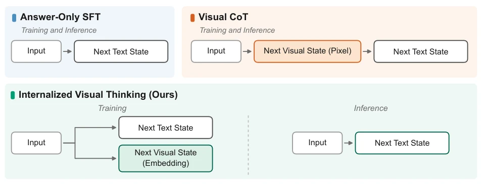
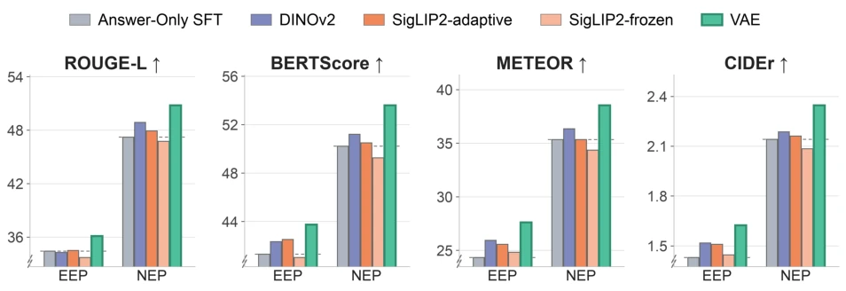
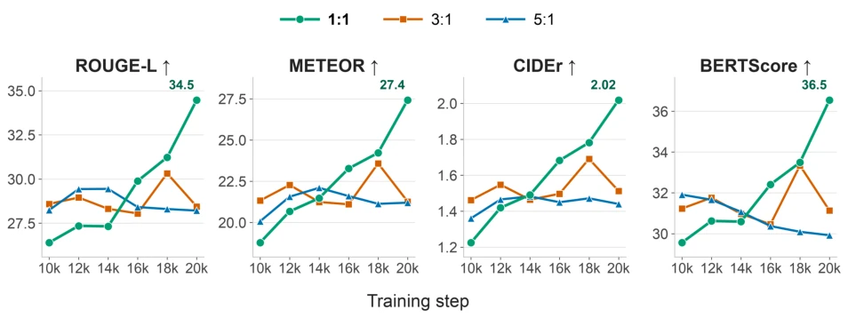
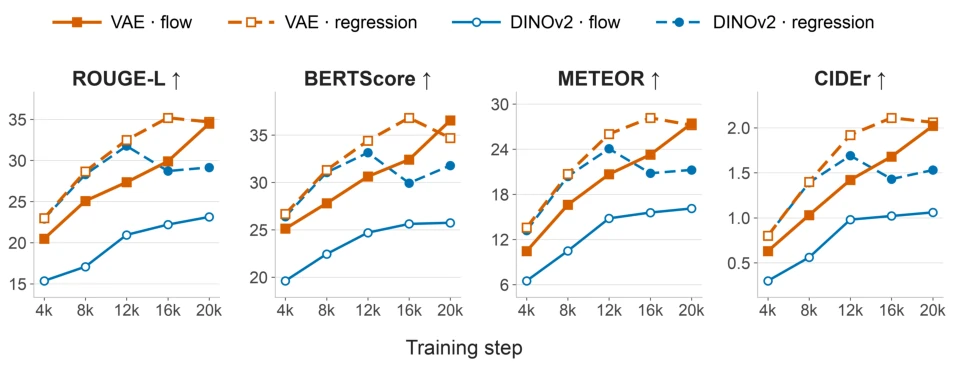
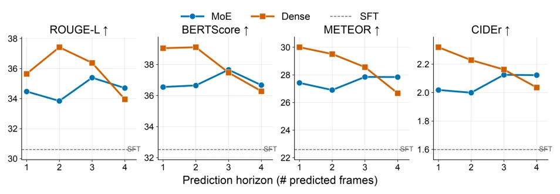

This paper throws cold water on Visual Chain of Thought (Visual CoT) approaches that are obsessed with generating "hallucinated images" during reasoning. The authors point out incisively: generating pixel-level images to "think" clearly about the future is simply "using a cannon to kill a chicken" in the realm of reasoning; not only does reasoning latency skyrocket by over 5 times, but the generated images are often full of hallucinations and provide no help at all. The core logic of IVT (Internalized Visual Thinking) is quite "cunning": during training, the model is made to "hallucinate" future frame Embedding in the latent space, while during inference, it directly outputs the answer without speaking. Results prove that this strategy of "only practicing internal skills without posing" is not only faster than Visual CoT but also yields better results. However, this trick is extremely picky about the choice of target representation; if chosen wrongly (e.g., using pure semantic features), the effect is significantly diminished, indicating that this is not a panacea but rather a "mystical" engineering project requiring fine-tuning of hyperparameters.
研究动机Motivation
现有的多模态大模型（MLLMs）在处理主动视频推理（Proactive Video Reasoning）时，常采用视觉思维链（Visual CoT）策略，即先生成未来的视觉图像作为中间推理步骤，再基于此生成文本答案（Li et al., 2025a）。然而，这种显式的像素级生成在推理阶段带来了巨大的计算开销，导致延迟增加5-6倍，严重阻碍了实时应用。更致命的是，生成的中间图像往往存在保真度问题，无法准确反映场景动态，甚至引入误导信息（Zhao et al., 2025）。此外，纯文本思维链（Textual CoT）在处理视觉动态时存在模态不匹配，容易依赖语言先验而产生幻觉（Wu et al., 2025b）。本文旨在解决这一矛盾：能否让模型在训练阶段学习“视觉思考”，而在推理阶段直接输出结果，从而兼顾推理的准确性与效率？
Existing Multimodal Large Language Models (MLLMs) often adopt the Visual Chain of Thought (Visual CoT) strategy when handling Proactive Video Reasoning, i.e., generating future visual images first as intermediate reasoning steps, and then generating text answers based on this (Li et al., 2025a). However, this explicit pixel-level generation brings huge computational overhead during the inference stage, causing latency to increase by 5-6 times, severely hindering real-time applications. More fatally, the generated intermediate images often suffer from fidelity issues, failing to accurately reflect scene dynamics, and even introducing misleading information (Zhao et al., 2025). Furthermore, pure Textual Chain of Thought (Textual CoT) suffers from modality mismatch when handling visual dynamics, easily relying on language priors to produce hallucinations (Wu et al., 2025b). This paper aims to resolve this contradiction: Can we let the model learn "visual thinking" during the training phase, while directly outputting results during the inference phase, thereby balancing reasoning accuracy and efficiency?

Figure 1 Three post-training paradigms for proactive video reasoning. Answer-Only SFT maps the observed input directly to the predicted textual state. Visual CoT first generates an explicit future visual state in pixel space and then conditions on it to produce the answer, so it pays for the image generation cost at inference. In contrast, our Internalized Visual Thinking (IVT) predicts the future visual state as a latent embedding target only during training; at inference it generates the answer directly, without synthesizing an intermediate image, and therefore executes the same computation graph as Answer-Only SFT.
IVT (Internalized Visual Thinking) proposes a post-training framework that internalizes visual reasoning from explicit generation during inference to latent space prediction during training. The overall process is divided into two stages: training and inference: during training, the model receives partially observed videos and text prompts, and is simultaneously required to predict Latent Embeddings of future frames and generate text answers; during inference, the model uses only the observed video to directly generate text answers, completely skipping image generation and re-encoding steps. Core innovations include: 1. Target representation selection: Compared Flux-VAE latent variables, DINOv2 semantic features, etc., finding that Flux-VAE can retain fine-grained spatiotemporal information and performs best. 2. Prediction target design: Supports Direct Regression and Rectified-Flow Matching, the former is better for DINOv2, the latter is effective for VAE latent variables. 3. Data mixing strategy: Adopt a 1:1 "Understanding-Prediction" data mixing ratio to avoid prediction capability degradation caused by excessive bias towards text supervision. 4. Training curriculum: Adopt joint optimization instead of two-stage training to ensure continuous alignment between prediction signals and language generation objectives. 5. Architecture design: Compared Dense (shared decoder) and MoE (Mixture of Experts) architectures, finding Dense is better under short horizons, while MoE is more robust under long horizons.

Figure 2 Comparison of different target representations. We report ROUGE-L, BERTScore, METEOR, and CIDEr, averaged across the three benchmarks for early-event and next-event prediction. The dashed line denotes the Answer-Only SFT baseline. Predicting a Flux-VAE latent consistently achieves the strongest performance across all metrics and both tasks, whereas semantic targets provide smaller and less consistent gains.

Figure 3 Effect of the understanding-to-prediction data-mixture ratio on Ego-Exo4D early-event prediction. We report performance throughout training for three sampling ratios. Understanding-heavy mixtures (3:1 and 5:1) improve more rapidly at early checkpoints but subsequently plateau or decline. In contrast, the balanced 1:1 mixture improves steadily and achieves the strongest result on all four metrics at 20k steps.

Figure 4 Comparison of predictive objectives on Ego-Exo4D early-event prediction. We compare rectified-flow matching and direct feature regression for VAE and DINOv2 future-state targets. Direct regression substantially outperforms flow matching for DINOv2 and is also competitive with flow matching for VAE across most checkpoints and metrics.

Figure 5 Interaction between decoder architecture and prediction horizon on Ego-Exo4D early-event predic- tion. We report the experimental results for each prediction horizon H, defined as the number of predicted future frames. The dashed line denotes the Answer-Only SFT baseline. Both architectures outperform it across all horizons. The shared Dense decoder performs best at short horizons, whereas the MoE architecture is comparatively less sensi- tive to horizon and reaches its strongest results around H = 3.
Experiments are conducted on three datasets: Ego-Exo4D, Ego4D, and EPIC-KITCHENS-100, covering Early Event Prediction (EEP) and Next Event Prediction (NEP) tasks. Baselines include Answer-Only SFT, Text CoT, Visual CoT (Zebra-CoT), and open-source models such as LLaVA-NeXT-Video, Qwen3-VL, etc. Evaluation metrics cover ROUGE-L, BERTScore, METEOR, CIDEr, and inference latency. Results show that IVT outperforms pure text SFT in all 6 settings, and surpasses Visual CoT in 4/6 settings, particularly performing significantly on the NEP task. Ablation studies indicate that Flux-VAE target representation and 1:1 data mixing are key; joint training is better than two-stage training; Dense architecture has the strongest performance under short horizons. Most importantly, IVT reduces end-to-end latency by over 5 times while maintaining the same inference path as SFT, and achieves higher accuracy.